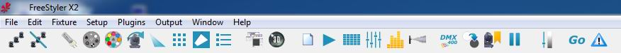
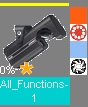

Freestyler
Software Information
System questions
List of supported DMX interfaces
List of un-official supported DMX interfaces
Tool bar

Setup
Setup Menu
Adding and removing fixtures to FreeStyler
Setup Menu - External Control
Setup Menu - Preferences
What are location files used for?
Backup/Restore Feature
Fixture startup, favorite and shutdown values
Reset to Factory defaults
External control - Overview
External Commands
Master Functions
Blackout
Favorite
Freeze
Intensity
Blue triangle
Fixtures control

Adding and removing fixtures to FreeStyler
Fixture Selection
Fixture Family selection panel
Create Groups
Blackout Groups
Advanced Fixture Settings
Popup Menu
Beam Panel
Lamp Panel
Gobo Panel
Color Panel
Custom Control Panel
Macro Panel
Pan / Tilt Panel
Fanning
Bezier Shape Panel
Framing Panel
Fog panel
Right side Sliders
Toolbar
Create Sequences
Using the Sequence editor
FX
sequence understanding
Cue - Sequence relation
Cue List
Troubleshooting
Preset
Playback
Playback a Sequence
Cue List
Cue - Sequence relation
Submaster
Override buttons
Timecode
How to use the DMX 400
How to use the "Run Command" feature
Troubleshooting
DMX Output
Output Menu
SunTriX & LedTriX plugins
SunTriX & LedTriX plugins
LedTrix: Main window
LedTrix: Setup window
Troubleshooting
Sound To Light
Using the Sound to Light Feature
Sound to Light v 2.x
Troubleshooting
Programming examples
Play Back Option - Random
Play back Option – Disable all Fades
Simple Steady Light
Small Stage Playground
Rainbow Tutorial
Tilt Wave Tutorial
How to use Sub master faders for other controls than intensity.